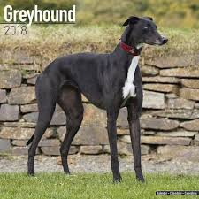
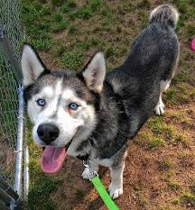

Welcome to a website about dogs!
Dalmatian

Fun Facts
The Dalmatian’s delightful, eye-catching spots of black or liver adorn one of the most distinctive coats in the animal kingdom. Beneath the spots is a graceful, elegantly proportioned trotting dog standing between 19 and 23 inches at the shoulder. Dals are muscular, built to go the distance; the powerful hindquarters provide the drive behind the smooth, effortless gait.
The Dal was originally bred to guard horses and coaches, and some of the old protective instinct remains. Reserved and dignified, Dals can be aloof with strangers and are dependable watchdogs. With their preferred humans, Dals are bright, loyal, and loving house dogs. They are strong, active athletes with great stamina—a wonderful partner for runners and hikers.
Greyhound

Fun Facts
Greyhounds are the essence of the dog breeder’s credo “Form follows function.” From the narrow, aerodynamic skull to the shock-absorbing pads of the feet, Greyhounds are perfectly constructed for high-speed pursuit. The lean beauty of the Greyhound “inverted S” shape, created by the deep chest curving gently into a tightly tucked waist, has been an object of fascination for artists, poets, and kings for as long as human beings have called themselves civilized. Greyhounds are the template from which other coursing hounds have been struck.
Siberian Huskey

Fun Facts
The graceful, medium-sized Siberian Husky’s almond-shaped eyes can be either brown or blue—and sometimes one of each—and convey a keen but amiable and even mischievous expression. Quick and nimble-footed, Siberians are known for their powerful but seemingly effortless gait. Tipping the scales at no more than 60 pounds, they are noticeably smaller and lighter than their burly cousin, the Alaskan Malamute.
As born pack dogs, they enjoy family life and get on well with other dogs. The Sibe’s innate friendliness render them indifferent watchdogs. These are energetic dogs who can’t resist chasing small animals, so secure running room is a must. An attractive feature of the breed: Huskies are naturally clean, with little doggy odor.